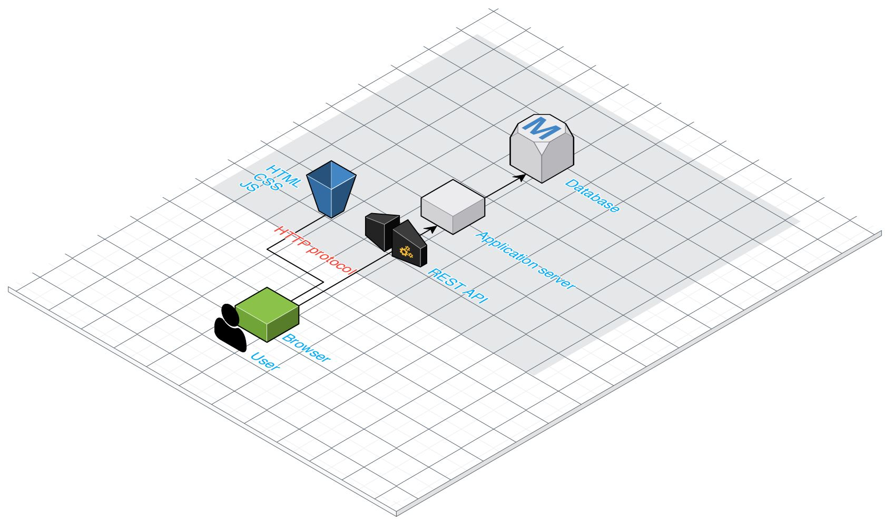
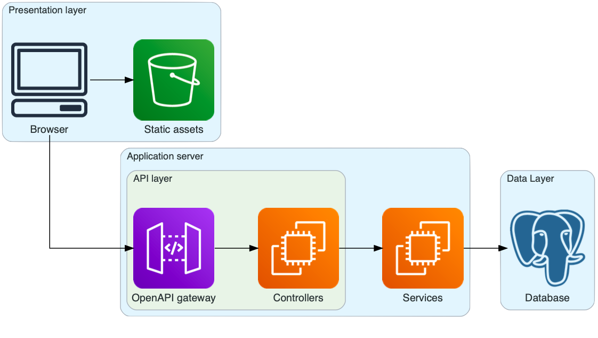

MilanoCare onlus - Backend Documentation
1 - General information
-
Najib ElGuertit
Personal Code: 839777
E-mail: najib.elguertit@mail.polimi.it
2 - Links to other deliverables
-
Deliverable D0 : The web application.
-
Deliverable D2 : YAML file containing the specification of the app API.
-
Deliverable D3 : The SwaggerUI page of the API.
-
Deliverable D4 : The source code of D0 is available as a zip file.
-
Deliverable D5 : The Git repository.
I hereby declare that this is a private repository and, upon request,
I will give access to the instructors.
3 - Specification
3.1 - Web Architecture

I took this slide directly from the Professor Zaccaria slides, as it is exactly the way I deployed this application.
The database is the data layer, while the Application server serves as application layer. The database is the one managed through Heroku,
while the Application Server is the one generated from the swaggerUI.
In a basic representation:

The initial response will be large and serve the static files including
all CSS, all Javascript, all HTML pages and some images, but no real
content. The future requests will serve JSON with information from the
database that will fill the appropriate HTML pages.
3.2 - API
3.2.1 - REST compliance
We'll describe the approach to REST principles by targeting their main
points:
-
Uniform Interface: is fundamental to the design of any REST service. Interface is resource based and I use HATEOAS (Hypermedia as the Engine of Application State). All the resources are accessible through a HTTP GET request.
-
Client-Server: client and server can be developed independently and
evolve separately with no dependency from each other.
-
Stateless: in REST applications, each request must contain all of the information necessary to be understood by the server, rather than be dependent on the server remembering prior requests. Storing session state on the server violates the stateless constraint of the REST architecture. So the session state must be handled entirely by the client.
-
Application Architecture: the application architecture is layered. Three main layers are available in the application: presentation, application and data.
Each layer can interact only with the following one, in order to split responsibility among them and assigning a specific focus to each layer.
3.2.2 - OpenAPI Resource models
Person
-
name - string
surname - string
role - string
description - string
photo_url - string
main_service_id - integer
Event
-
name - string
location - string
date - string
description - string
photo_url - string
person_id - integer
service_id - integer
3.3 - Data model
The relationship between entities is the following:
A staff member can organize numerous events and has only one main service.
An event can support only one service but a service can be supported by
many events.

4 - Implementation
4.1 - Tools used
To develop the back end application, I used:
node js
postgreSQL to manage the database
Swagger to generate and manage the server and the specification
4.2 - Description
I started writting the specification of the api in Swagger where i end up with several versions in order to make it right.
I created a db directly in heroku (directly in the production it's not the right way) due to problem i faced with my mac.
After those steps were completed, I started working on the controllers then working on Html files in order to fetch data and show them on the browser client.
5 - Other information
5.1 - Task assignment
Najib El Guertit
200% backend (3-4 months)
70% frontend (1 month)
5.2 - Analysis of existing API
I found that example of Swagger Petstore very helpful,
The videos of the prof Zaccaria, meetings with Prof Gianotti , Youtube tutorials, Udemy class (Frontend and Backend) and a LOT of posts from Stackoverflow.
5.4 - Learning outcome
I never have an experience in javascript or node JS, postgrsql before, I start learning all this from scratch
take me a while to be come familiar with the concept of developing and managing a web database, I am highly satisfy with the result.
Thanks to all the professors were involved in this course for their directions and specially for their supports.